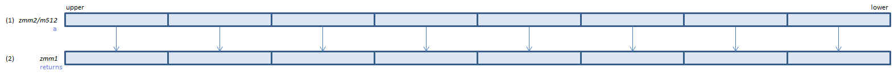

VRNDSCALEPD - RouND SCALE Packed Double
VRNDSCALEPD xmm1{k1}{z}, xmm2/m128/m64bcst, imm8 (V5+VL
__m128d _mm_roundscale_pd(__m128d a, int imm8)
__m128d _mm_mask_roundscale_pd(__m128d s, __mmask8 k, __m128d a, int imm8)
__m128d _mm_maskz_roundscale_pd(__mmask8 k, __m128d a, int imm8)

For each double, round (1) to n-bit below the decimal point and set the resulting double to (2).
VRNDSCALEPD ymm1{k1}{z}, ymm2/m256/m64bcst, imm8 (V5+VL
__m256d _mm256_roundscale_pd(__m256d a, int imm8)
__m256d _mm256_mask_roundscale_pd(__m256d s, __mmask8 k, __m256d a, int imm8)
__m256d _mm256_maskz_roundscale_pd(__mmask8 k, __m256d a, int imm8)

For each double, round (1) to n-bit below the decimal point and set the resulting double to (2).
VRNDSCALEPD zmm1{k1}{z}, zmm2/m512/m64bcst{sae}, imm8 (V5
__m512d _mm512_roundscale_pd(__m512d a, int imm8)
__m512d _mm512_mask_roundscale_pd(__m512d s, __mmask8 k, __m512d a, int imm8)
__m512d _mm512_maskz_roundscale_pd(__mmask8 k, __m512d a, int imm8)
__m512d _mm512_roundscale_round_pd(__m512d a, int imm8, int sae)
__m512d _mm512_mask_roundscale_round_pd(__m512d s, __mmask8 k, __m512d a, int imm8, int sae)
__m512d _mm512_maskz_roundscale_round_pd(__mmask8 k, __m512d a, int imm8, int sae)

For each double, round (1) to n-bit below the decimal point and set the resulting double to (2).
imm8
| bit |
|
| 7:4 |
Bits to preserve below decimal point (0 to 15).
Set 0 in this field to round to decimal point (like ROUNDPD / ROUNDPS).
|
| 3 |
0: precision exception mask is specified by MXCSR
1: precision exception is masked
|
| 2 |
0: rounding mode is specified by bit 1:0
1: rounding mode is specified by MXCSR
|
| 1:0 |
00: round to nearest or even
01: round toward negative infinity
10: round toward positive inifinity
11: round toward zero
|
x86/x64 SIMD Instruction List
Feedback